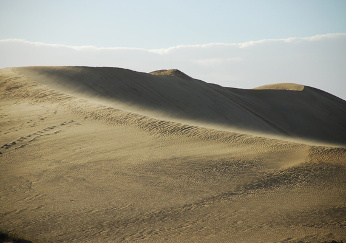

Carnaval de la Pedrera
El Carnaval de La Pedrera es una fiesta callejera en donde los jóvenes beben y bailan hasta largas horas de la mañana, incluso una vez salido el sol. Por esto te recomendamos que si vas a ir a la fiesta de carnaval lleves tus lentes de sol por si la mañana. El domingo 13 de febrero comienza el Carnaval 2022 en Rocha. La Intendencia Departamental de Rocha través de la Dirección de Cultura, ha informado el cronograma con los horarios de desfiles en las ciudades y balnearios del departamento, del Carnaval 2022.

Naufragios
Son incontables los naufragios que se han producido frente a las costas de Rocha a lo largo de la historia desde los tiempos de Juan Díaz de Solís. Dejando su huella en las tradiciones y la cultura. Los faros de La Paloma y Cabo Polonio han prevenido los hundimientos durante el último siglo, pero aún los locales cuentan leyendas de piratas, esoros escondidos y barcos hundidos de los orígenes de la zona. Algunos restos de las embarcaciones pueblan el fondo marino, mientras otros permanecen en las playas.

Butia
Macerados en alcohol producen un exquisito licor. La pulpa puede conservarse congelada durante un año, y de ella se extrae el jugo, en tanto que de la fibra se hace harina para panificados.Las semillas del butiá, molidas y tostadas, se utilizan para elaborar "café de coco", y se toma como infusión, o agregado al mate. El helado de butiá se ha transformado en uno de los sabores artesanales favoritos durante el verano en heladerías de los balnearios de Rocha.

Cerro de la Buena Vista
Su nombre lo dice todo, el Cerro de la Buena Vista es el principal atractivo de Barra de Valizas, es el punto más elevado de las dunas, de la costa de Uruguay, que separan este balneario de Cabo Polonio. Desde su cima el panorama es espectacular, la isla Castillo Grande, la isla Seca, las playas oceánicas, el Cabo Polonio, la Laguna de Castillos, el Arroyo Valizas y el pueblo se despliegan en un paisaje inolvidable.
